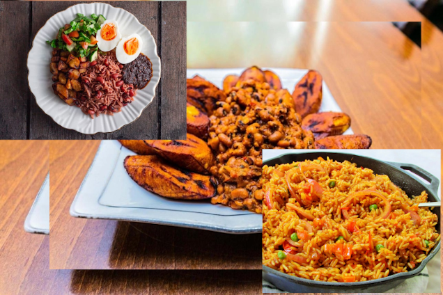

Odin Recipes

Recipes of 3 Popular Ghanaian Dishes.
Below are three recipes of my favorite Ghanaian dishes:
Ghanaian Jollof Rice Recipe
Gari and Beans (Gob3) Recipe
Ghanaian Rice and Beans (Waakye) Recipe